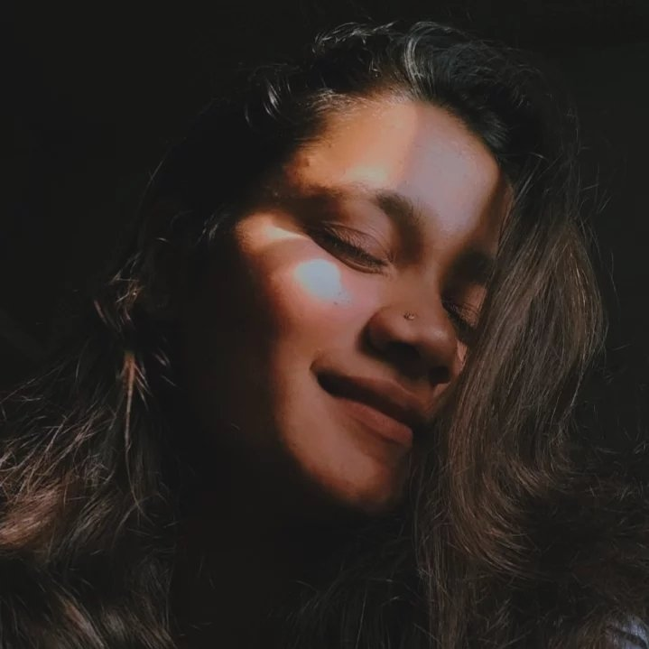

Before you go further...
“i request you, please...”
He sagal karun mi tula dukhaval nasel edvhich apekshya kartoy. He
sagal handle karan khup jast ahe he mala mahit ahe. Mazyakade atta
ha last option rahilay. Tula ajun safe pahije asel
tar hi site pudhachya veli chrome chya incognito mode madhe ughad te
jast safe hoil. I'm sorry tula he karav lagatay. I hope ki tu samjun
gheshil. Ajun ek tula jar music stop karayach asel tar bottom la pause button ahe tyachyavar click kar.
Mi tula kas approach karu hech kalat navhat.
Mi tula insta var msg karu shakat nahi. Bio madhe mala jast kahi
lihata yet nahi. Mala vatal ki ek personalised blog jar banvala tar
mala tula sagal sangata yeil. Mi ha blog tayar karanya madhe khup
vel ghatala ahe tymalue please sagal ekda carefully vach. Design
ajun itaki perfect nahiye tymaule pls samjun ghe. Hi site mi fakt kahi velach chalu thevnar ahe. Tyamule please
jevdhya lavkar tula vachata yeil tevdhya lavkar vach.
Mazyakade baryach short stories ahet jya mala tula sanga-vyasha
vatatayat. Hya stories mhanje actual incidents ahet. He kadhi, kase,
ka zale yachyabaddal thod-thod lihilay. Pudhe vachat gelis ki tula
kalech. Hya stories tula maz charecter kas ahe ani mi tula kharach
like karto ki nahi he patvun dyayala help karatil. Mala tula ajibat
force karayach nahiye. Pn tu ekda vachavas as mala vatat. Blog khup
motha ahe tyamule tula thoda vel lagu shakato. Daily thod vachalas
ki complete houn jail. Mi swatala khup samjavto ki tu mala like
karat nahis, tula tras nako dyayala pn jenva tula mi baghato tenvha
mala swatavar control rahat nahi. Mazi ichha ahe ki tu mala tuzya
manatal khar sangavas. I mean tu kadhi mazyavar ka chidat nahis?
mala vait ka bolat nahis? Mi tula itka tras deun suddha mazyasobat
kadhi misbehave kela nahis? Kadachit hech karan ahe ki mi parat
parat yetoy.
Ithe lihalyala stories mazya point of view ne ekdam kharya ahet.
Tula kadachit kahi aathvat suddha nasel. Pn he sagal Actually ghadal
ahe. Tula tyachavar vishwas thevaycha ka nahi te completely tuzyavar
ahe. Parat ekda manapasun sorry tuza vel ghetalyabaddal. Ha maza
tula approach karanyacha shevatacha prayatn asel tymaule please
vach...


“Breathtaking should mean YOU in the dictionary.”
“The Day I Fell In Love...”
Mazyakade khup moth secret ahe je konalach mahit nahiy. Kadhi ani
kasa mi eka mulisathi feel karay lagolo he mi konalach sangital
nahi. Kharach konalach nahi! Mala vatat ti kadachit 7vi madhe asel.
Bazarcha divas hota ani mi mazya mitrasobat gavat gelo hoto. Maza
mitr dukanamadhye gela, ani mi medical javal thambalo hoto. Tevdhyat
ek mulagi mazya samor yeun thambali. Light orange and white
combination asa ticha dress hota. Khup beautiful ani cute. Tiche
mothe lovely dole jyanchyat mi haravalo. Ticha perfect facecut. Ani
tya sundar chehryala suit karnare kes. Ti kharach total beauty hoti.
Ti mazya dolyat dole ghalun mazyakade baghat hoti. Mala ajibat kalat
navhat kay chaluy. Mi purnpane blank zalo hoto. Mi tichyakade
vedyasarakha fakt baghat rahilo. Mi vichar karat hoto ki, ashi
mulagi asuch kashi shakte. Mi tichya immense beauty ne amaze zalo
hoto. Tya divashi mi officially tya mulisathi veda zalo. Ghari jau
paryant mi tichya baddal mitrashi bolan thambat cha navhato. Ghari
gelyavar suddha mi tichach chehara athavat hoto. Tichach vichar
karat basalo hoto. Tithun pudhe aajparyant asa ek suddha divas nahi
jenvha mi ticha vichar kela nahi. Ti mazi life banali. To divas
aajsuddha mala clearly dolyasamor distoy. To divas mi kadhich visaru
shakat nahi.
AND THAT GIRL WAS YOU...
“I saw that you were perfect, and so I loved you. Then I saw that
you were not perfect and I loved you even more.”
“Maz Tuzyakade roj yen...”
Tya divashi tula tithe baghitlyanantar mi ratrbhar zopalo nahi. Mala
as vatat hot ki mi kadhi ekda udya uthtoy ani tula baghtoy as zal
hot. Mala tula baghitalya shivay rahavana. Maza mitr ani mi roj
shalet jat hoto. To tyachya crush la baghayala jaycha ani mi tula.
Tula baghan mhanje maza daily cha routine zala hota. Tula itak man
bharun baghitalay ki tu imagine pn karu shakat nahis. Tuzi mala
savay lagali. Mi roj tuzyakad yen tula baghan he khup joyful hot.
Tula suddha mahit hot ki mi tuzyasathich yet hoto te. As vatayach ki
tula suddha mi yen avdayach.
To time mazya life madhala sagalyat happy hota. Mala mahit nahi ki
tula aathvat asel ki nahi pn mi roj tula follow karat road chya
corner yaycho pn gharaparyant nahi. Tu itaki khush asayachis ki kay
bolu. Tula smile karatana baghun maz heart melt vhayach. Tu tyaveli
mazya baddal kay vichar karat hotis konala mahit. Pn mala as
vatayach ki tu mala actually like karat hotis. Jenhva-jenvha mi
tuzya mage aalo tya pratyek veli mala tuzya dolyamdhe mazyasathi
kahitari special disal. Tula follow karat jenvha mi tuzya maghe
yaycho tenvha tu sarakh maghe valun check karat hotis ki amhi ajun
parat gelo ki nahi te pn exciting houn. Tyaveli tu mala kadhich
ignore kel nahis. Tula mahit hot ki mi tuzyasathich yetoy pn
tarisuddha mala tuzyashi bolata aal nahi. Tuzyasathi mi veda zalo
hoto. Mi tya vatevar tuzi vat baghat khup time spend kelay. Itaka ki
tu vichar suddha karu shakat nahis. Tu dislis ki mi happy, nahi tar
sad. Tyaveli sagal agadi easy hot. No complications! To time life
madhala best hota. Tula mazyakadun kahi apeksha navhatya na mala
tuzyakadun. Tula baghan evdhach hav hot.
Tu mazi favourite habit banalis...
"You're the best thing I never knew I needed. So now it's so clear I
need you here always."
"but everything changed...”
Tuzyakade yet kadhi shala sampali kalalach nahi. May chi sutti
padali. Mala tar tula baghayacha hot. Shevati tuzya ghari pn jayala
suru kel. Kahi vela dislis pn lambunach. Tula mahit suddha navhat mi
alel. Tu tuza 7vi cha result ghyayala ali hotis tya divashi mi tula
shevatach baghital hot. Tychya nantar mi tula direct highschool
madhech baghital. Mala nahi mahit kay zal hot pn tu complete change
zalelis. Jenvha tu mala pahilyanda baghitalas tenvha tu as behave
kelas ki tu mala kadhich baghitalel nahis. Complete stranger! Mala
ajun suddha mahit nahi ki, nemak kon change zalel tu ka mi.
Tyachyanantar mi tula parat parat baghital pn tu mala kadhich
response dila nahis. Mi baryach vela as dakhavnyacha prayatn kela ki
mi tula olakhtoy pn kahi use navhata. Tyaveli mi khup disappoint
zalo hoto. Mala vatal ki highschool madhe alyamule tu as vagat
asshil. Tychya nantar mi tula approach kel nahi.
Mi roj highschool la yaycho tula baghaycho pn kadhi approach
karaychi himmat zali nahi. As karat 2 varshe kadhi nighun geli
kalalach nahis. Finally mi highschool madhun baher padalo. Pn
college sathi mi kolhapurala gelo. Tenvha tu 10 vi la asshil. Mi
kadhihi ghari alo tar tuzi vat baghat tya vatevar thambaycho. Pn tu
ajun suddha mazyashi coldch hotis. Mi jenhva-jenvha tuzya kade alo
tu pratyek veli ignore kelas. Darveli vatayach ki tu hyaveli
mazyashi better behave karshil, smile karshil pn te kadhich ghadal
nahi. As karat kadhi 4 varshe nighun geli mala kalach nahi. Itka vel
zala hota pn mi tya 7vi chya shruti chi ajun vat baghatach hoto...
Tu sagal visarun gelis, ka anakhi vegal reason hot...
“When I see your face, there’s not a thing that I would change,
’cause you’re amazing – just the way you are.”
“Mi tuzyashi rude hoto...”
Mala ek incident clearly aathvatoy, tyachaybaddal bolan suddha khup
embarassing ahe. Mala mahit nahi he tula aathvat ki nahi. I guess tu
diploma fy la asshil. Mi tenvah KO madhe hoto. Mala ti date suddha
athavte (14 Oct) karan mazya birthday chya dusarya divashich he
ghadal hot. Mi KO madhun ichalkaranji la gelo hoto karan mala
pappana kahi documents dyayche hote. Docs dilyanantar mi standavar
gelo ani tithe tula baghital. Tya divashi sunday hota ani mi tula
ajibat expect karat navhato. Mi itaka surprise zalo hoto ki mala
kahi kalat navhat mi kay karav. Mazya mind madhe barech vichar
chalale hote. Mi khup nervous zalo. Pn mala ha chance ghalavaycha
navhata. Mala asa vatal ki mi tuzyashi bolalo tar kadachit apala
bolan hoil. Mala mazya feelings share karata yetil. To aaj
paryantacha sagalyat bad decision ahe.
Thoda vel thamblyantar bus ali. Mi tharavelech ki kahi jari zal tari
tuzya bajulach basnar. Mala mahit nahi mazyamadhe evdha confidence
kuthala ala hota, pn vatal mi tula vicharal ki mi ithe basu ka tar
tu ho mhanshil. Ani mi completely wrong hoto. Tu bus madhe chadhlis
ani tuzya mage mi. Tu right side chya second row madhe baslis. Mi
ghabarat tula vicharal ki mi ithe basu ka? Pn tu directly nahi
bolalis. Mi ekdam shocked zalo. Mi ha vicharch kela navhata ki, tu
nahi mhanu shaktes. Suddenly mi maza temper lose kela ani tula
mhanalo "Mala ithech basayacha ahe!". Tu kahich na bolata seat
change kelis. Tula maza attitude disat asel pn mi khup nervous zalo
hoto. Tithech mala swatacha khup rag ala. Tyaveli mi completely down
zalo. Mi tithe 2 min basalo ani dusarya bus kade gelo. Mi completely
blank zalo hoto. Mi kay karat hoto maz malach kalat navhat.
Hostel la jauparyant mi vichar karat hoto ki tu nahi ka bolalis.
Ratr bhar vichar kelyavar mala kalal ki mi completely emotional
hoto. Mi jarasudha practical navhato. Mi ajibat vichar kela nahi ki,
tu kay vichar karat asshil. Tya ratri mala kalal ki, mi kiti mothi
mistake keli ahe. Mala aajsuddha tya goshticha regret ahe. Mala tula
ekda manapasun sorry mhanaych hot. Mi tuzyashi khup rude vagalo. Maz
tula dukhavaych ajibat intention navhat pn mi wrong hoto he kharach
ahe. Tychya nantar suddha tu kadhi mazyashi misbehave kela nahis
tychyasathi mi tula kitihi thank you mhanal tari kamich ahe.
Once again, I'm really sorry...
"So it's not gonna be easy. It's going to be really hard; we're
gonna have to work at this everyday, but I want to do that because I
want you. I want all of you, forever, everyday."
“And god listened...”
Ha incident khup important, memorable ani best ahe. Mi college
complete karun ghari parat aalo hoto. Mala vfx karayach hot tyamule
mi online institute la apply karanar hoto. Tyachyanantar mazya kade
barach vel hota tuzyakade yenyasathi. Jenvha mala kalal ki tu kanya
college madhe admission ghetal ahes tenvha mi tuzyakade yayala atur
zalo hoto. Mi tu mala ignore kelel, mala na notice kelel sagal
visaralo. Mala vatal at least hyaveli kahitar navin hoil. Jenvha
tula pahilyanda baghital tenvha swatala parat yenya pasun thambavu
shakalo nahi. Tyachyanantar mi tuzyakade roj yayala lagalo. Tuzi vat
baghayala lagalo. Suruvatiche kahi divas normalch hote. Tu mala
notice karayala barach vel ghetlas.
Tuzyakade roj yetana asach ek divashi tula baghanysathi gelo hoto.
Hi gosht kanya college chya suruvatichi ahe. Tya divashi khup late
paryant vat baghat hoto. Tyachya kahi divas adhipasun tu bad mood
madhe hotis. Mazya kade baghat suddha navhatis. Mi tuzyakade yeu ka
nako as vatat hot. Barach vel vat baghitlyanantar tu alis. Tu cycle
kadhlis pn na baghatach nighalis. Mi ajun jastach disappoint zalo.
Tu pudhe jat asatan mi manytalya manat mhatal "deva, tila please
mala baghu de jar hine mazyakade valun baghital nahi tar mi
hichyakade parat kadhich yenar nahi." Ani magic happened. Tu valun
baghitalas. Jas tu baghital to moment ekdam filmy ani romantic hota.
Mala shabdat mandata yet nahi pn it was magical.
Ithunch sagal badalayala suru zal. Thodya velanantar tu mala
checkout karayala suru kelas. Tu smile karat hotis. Roj ekdam heaven
chi feeling yet hoti. Jith yen thambvnar hot tithe ajun jast yayla
lagalo. Te year life madhal best hot. Mala actually vatayala lagal
ki kadachit tu mala like kartes ki kay. Mi tuzyakade baghital tar as
vatat hot ki tula sagal mahit ahe ani tu mazyasathi feel karayala
lagali ahes. Mala mahit nahi ha maza gairsamaj hota ka tu actually
kahitari feel karata hotis. I guess mala kadhich kalanar nahi.
Anyway sagal ekdam mast chalal hot. Mi tuzyakade yenyasathi udyachi
vat baghay lagalo. Ithun pudhe je zal te ekdam crazy ani exciting ahe. Yaychya baddal tula ajibat idea nahiye.
Thank you for the amazing momemt...
Next